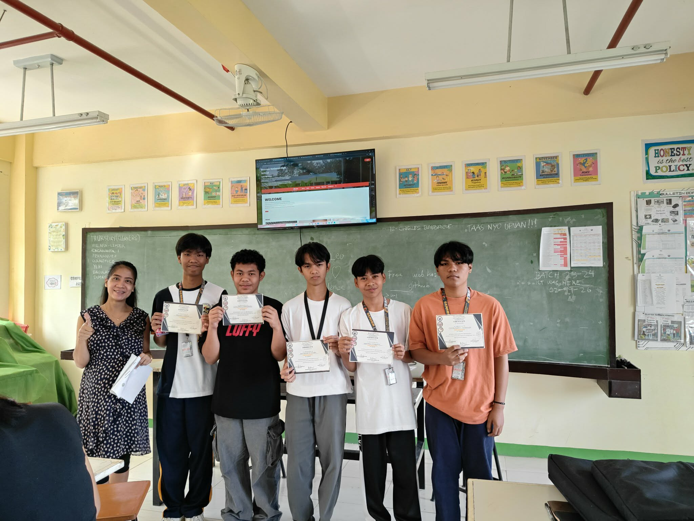

RNHS Feb. Ibig Special
February 12-13, 2026
A special celebration of love and friendship at Rosales National High School featuring various activities and entertainment.

TVL Demonstration Skills
February 19, 2026
An exhibition showcasing the technical and vocational skills developed by our TVL students through hands-on demonstrations.

Field Demo
March 2, 2026
A practical field demonstration showcasing agricultural and environmental initiatives implemented by our school.